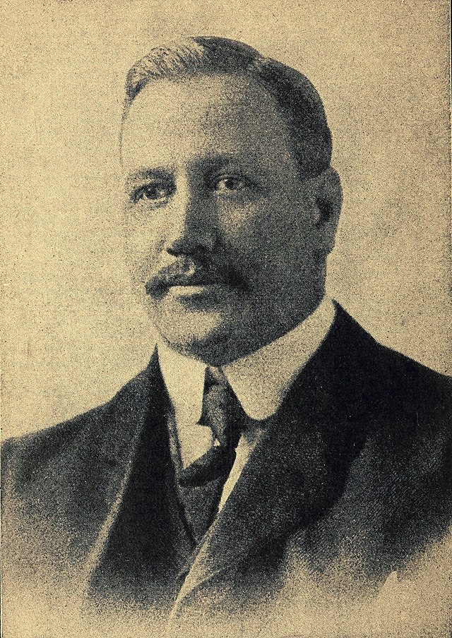

Voleybol oyununu kim icat etti?
ABD'nin Massachusetts eyaletinde, Genç Erkekler Hristiyan Birliği (YMCA) adındaki spor kulübünde çalışan beden eğitimi öğretmeni William G. Morgan tarafından 9 Şubat 1895'te tasarlandı. Bir kapalı alan sporu olarak 1895'te oynanmaya başlandı.